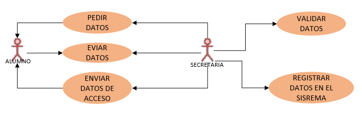

Manejo de conceptos básicos del
proceso de modelado
Apellidos y Nombre: Paredes Karem
ciclo: IIIB-D
Instituto: "Antenor Orrego Espinoza"
1.- ¿Qué es Modelado?
Es un medio para representar el sistema usando algun tipo de notacion grafica basado
en el lenguaje UMl
2.- ¿Cuál es el ciclo de vida de un Software, Explique detalladamente?
El ciclo de vida es el conjunto de fases por las que pasa el sistema que se está
desarrollando desde que nace la idea inicial hasta que el software es retirado o remplazado

3.- ¿Cuál es el objetivo de modelar un Software?
ayuda a visualizar como es que queremos que sea un sistema
4.- ¿Qué es la Ingeniería de Procesos? - explique con un ejemplo
Cuando se habla de ingeniería de procesos se está haciendo referencia a una disciplina encaminada a desarrollar cada una de las fases de los procesos
de la manera más eficiente posible. Es decir, a maximizar los resultados obtenidos gestionando lo mejor posible todos y cada uno de los recursos disponibles.
5.- ¿Qué es reingeniería? - explique con un ejemplo
Es una revisión fundamental y rediseño radical de proceso para alcanzar mejoras
6.- ¿Qué es Reingeniería Inversa - explique con un ejemplo?
es un proceso el cual se observa cómo está construido y cómo funciona un objeto, proceso, programa o sistema con la intención de mejorarlo o duplicarlo.
7.- ¿En que consiste el proceso de reutilización de Software - explique con un ejemplo?
Se basa en reutilizar diseños, programas, modulos y datos.
8.- ¿Explique la diferencia entre aplicaciones blandas y Duras - explique con un ejemplo?
Dura: son los aparatos técnicos empleados para la realización de estudios específicos
Blanda: comprenden a los profesionales en su desempeño, organización y conocimiento aplicado.
9.- ¿Qué es UML, explique los principales DCU?
Es un lenguaje de modelo unificado.
ACTORES: Los actores representan un tipo de usuario del sistema. En los diagramas
de casos de uso, los actores se dibujancomo una silueta humana (un monigote)
CASOS DE USO: Un caso de uso es una tarea que debe poder llevarse a cabo con
el apoyo del sistema que se está desarrollando. Se representan mediante un óvalo
ASOCIACIONES: Hay una asociación entre un actor y un caso de uso si el actor interactúa
con el sistema para llevar a cabo el caso de uso. Se representan mediante una línea

10.- Explique mediante un cuadro las diferencias entre el Software libre y propietario.
| SOFTWARE LIBRE |
SOFTWARE PROPIETARIO |
|
El codigo puede ser modificado
No requiere actualizaciones
Sin costo
Orientacion mediante Blog, Foros y wikis
Libertad de uso
|
No tiene acceso al codigo
Requiere actualizaciones
Tiene costo
Orientacion mediante paginas oficiales, propietarios y manuales
Limita el uso al usuario
|
11.- Caso a Modelar:
El IESTP "ANTENOR ORREGO ESPINOZA" desea implementar un sistema de matrícula y registro de notas,
se les pide realizar el proceso de modelamiento de los dos procesos detallados.
MODELADO:
matrícula:

registro de notas:
Diagrama de flujo de matricula
registro de notas